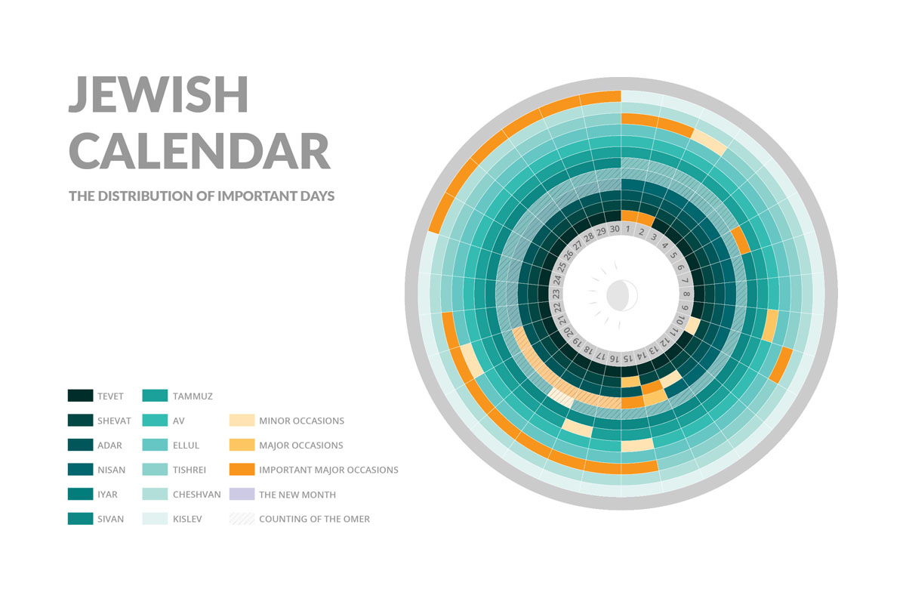
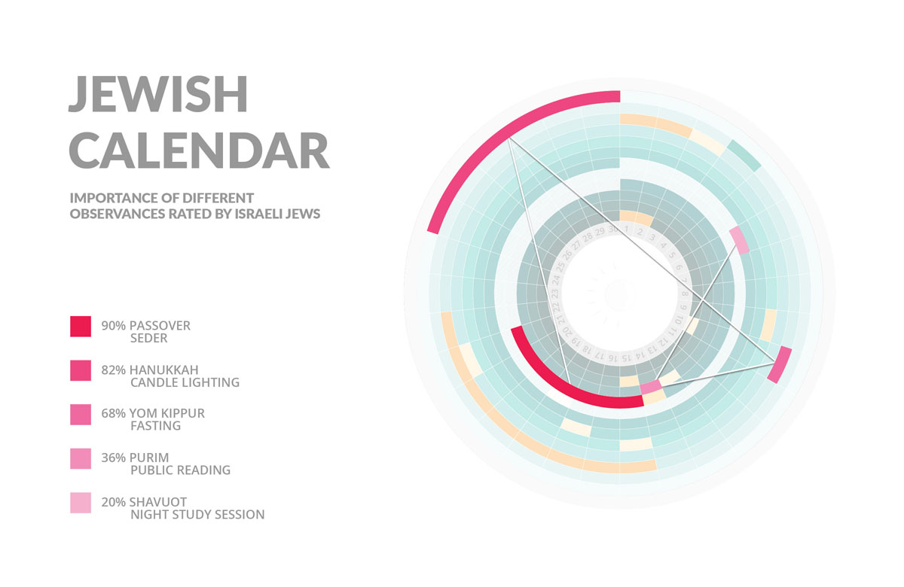

Oct 2015
Graphic Design
Infographics
Religion and secularity are often regarded as an opposing duality in contemporary Western societies. However, Israel, the Holy Land, has a completely different landscape where the two intersects. This research explores the reinterpretation of Jewish traditions in the secular society of Israel. A visualisation of the Jewish Calendar is created to help understand what religious traditions Jewish people keep and which of them are still regarded as important to their community.
 The Jewish calendar, which is based on both solar and lunar years, is preserved despite the emerging use of the Gregorian Western calendar. The above diagrams depict the pattern of important religious dates and the observances that are perceived as important (in orange) throughout the Jewish year (inner ring - Tevet; outer ring - Kislev). The most practised rituals are ranked (in pink) to show the distribution among the year.